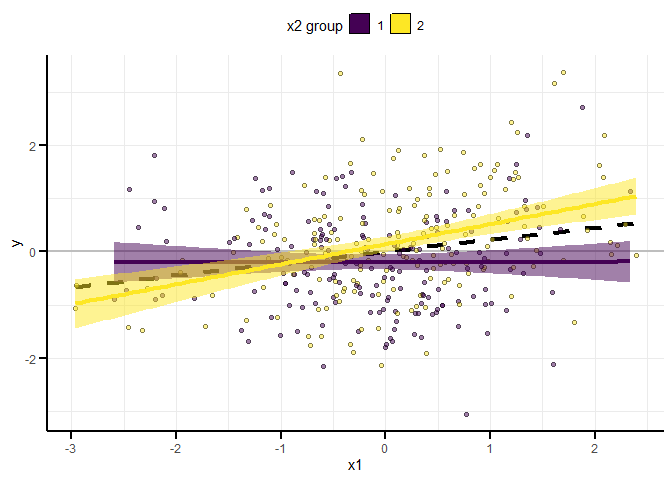
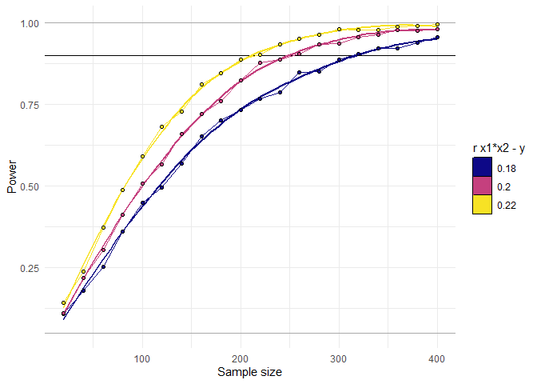
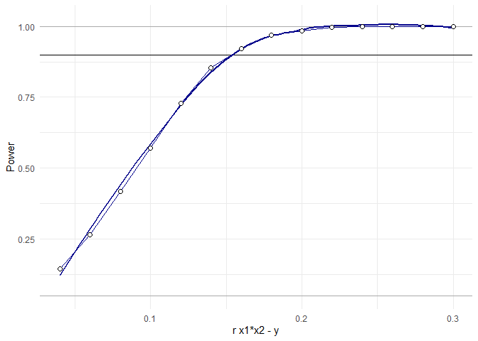
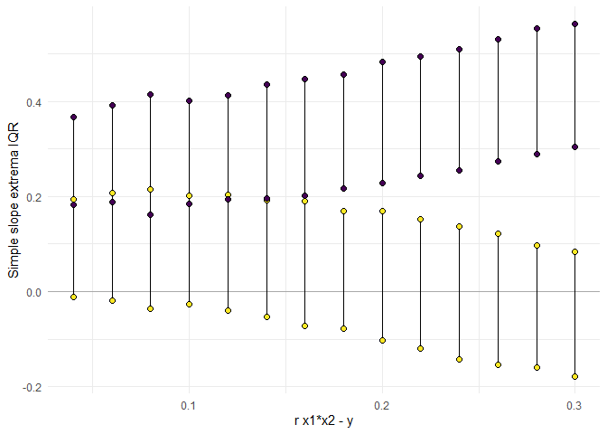
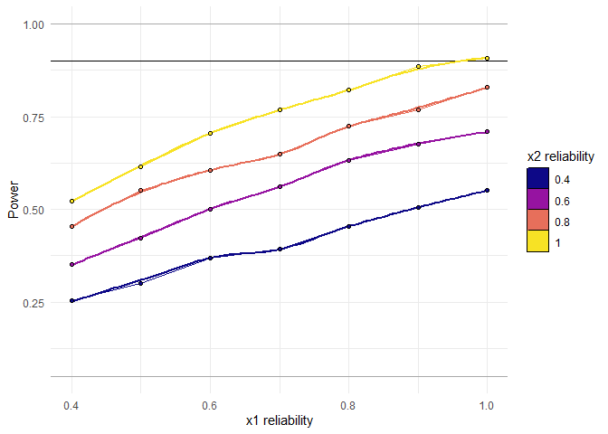
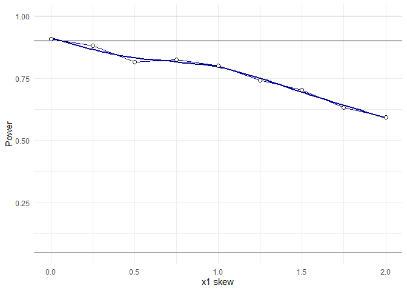
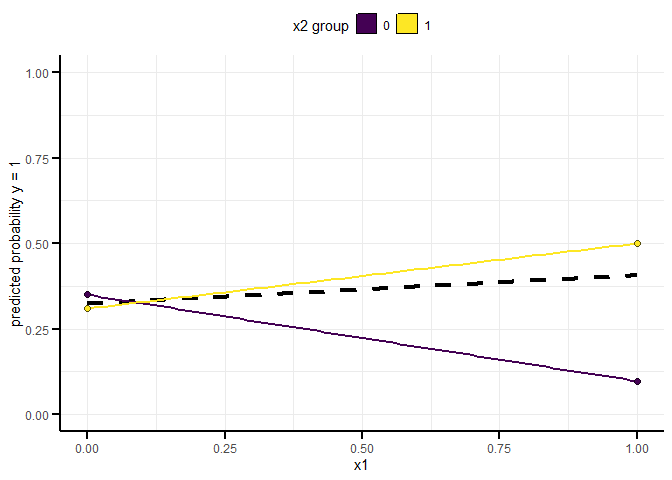

InteractionPoweR is an R package for running power analyses for interactions in cross-sectional data sets between continuous and/or binary variables (also known as a moderation analysis). The main function is power_interaction(), which performs the power analysis. This is done via Monte Carlo simulation. power_estimate() helps to interpret the results of the power simulation, and plot_power_curve() and plot_simple_slope() generate plots to visualize the results. The function generate_interaction() simulates a single data set drawn from the specified population-level effects and plot_interaction() can be used to visualize the simulated data.
You can install InteractionPoweR from github with:
install.packages("devtools")
devtools::install_github("dbaranger/InteractionPoweR")Sometimes there will be a minor installation error, which can be resolved by using:
install.packages("devtools")
devtools::install_github("dbaranger/InteractionPoweR/@HEAD")The simplest use-case is when all the input parameters are known. We know the population-level correlation between our predictors (x1 and x2) and our outcome, we have a smallest effect size of interest in mind for our interaction effect size, and our sample size is already set (maybe we are conducting secondary data analysis). Power can be determined with a single command. NB In all these examples we use 1000 simulations for speed (n.iter = 1000), but for robust results we recommend 10,000 simulations (n.iter = 10000).
library(InteractionPoweR)
library(tictoc)
tic()
test_power<-power_interaction(
n.iter = 1000, # number of simulations per unique combination of input parameters
alpha = 0.05, # alpha, for the power analysis
N = 350, # sample size
r.x1x2.y = .15, # interaction effect to test (correlation between x1*x2 and y)
r.x1.y = .2, # correlation between x1 and y
r.x2.y = .1, # correlation between x2 and y
r.x1.x2 = .2, # correlation between x1 and x2
seed = 581827 # seed, for reproducibility - this generally should not be set
)
#> [1] "Checking for errors in inputs..."
#> [1] "Performing 1000 simulations"
toc()
#> 16.42 sec elapsed
test_power
#> # A tibble: 1 x 1
#> pwr
#> <dbl>
#> 1 0.809We see that we have 80.9% power to detect the effect of interest.
It can be hard to know what interaction correlations mean in terms of how the data will look. To help users interpret interaction effects, we provide a simple interface for simulating single data sets and plotting them.
set.seed(2020)
sample_data<-generate_interaction(N=350,r.x1x2.y =.15,r.x1.y = .2, r.x2.y = .1, r.x1.x2 = .2)
plot_interaction(data = sample_data,q = 2)
The test_interaction() function can be used to see the results of the regression y ~ x1 + x2 + x1x2. It also returns a variety of statistics that can be useful in understanding the interaction, including the adjusted R2, the 95% confidence-interval of the interaction, the cross-over point (the value of x1 where the simple slopes intersect), the “shape” of the interaction (1 = knock-out, <1 = attenuated, >1 = cross-over), the simple-slopes, the correlation between the variables.
test_interaction(data = sample_data,q = 2)
#> $linear.model
#> Estimate Std. Error t value Pr(>|t|)
#> x1 0.1888967 0.05153863 3.665148 2.859696e-04
#> x2 0.1356407 0.05165265 2.626016 9.022851e-03
#> x1x2 0.2129386 0.05001033 4.257892 2.661829e-05
#>
#> $x1x2.adjusted.r2
#> [1] 0.04391331
#>
#> $x1x2.confint
#> x1x2_95confint_2.5 x1x2_95confint_97.5
#> 1 0.1145761 0.3113011
#>
#> $interaction.shape
#> crossover.point shape
#> 1 -0.6369945 1.127275
#>
#> $simple.slopes
#> lower.slope upper.slope
#> x2 0.00222888 0.3766329
#>
#> $correlation
#> cor v1 v2
#> 5 0.20000000 x1 x2
#> 9 0.22361262 x1 y
#> 10 0.18961691 x2 y
#> 13 0.03519020 x1 x1x2
#> 14 0.07511716 x2 x1x2
#> 15 0.23245767 y x1x2In this example, we know the population-level correlation between each of our predictors (x1 and x2) and our outcome (y), as well as the correlation between the two predictors. We are interested in interactions within a certain range, and wish to know what sample size we would need to detect those interactions.
library(tictoc)
tic()
test_power<-power_interaction(
n.iter = 1000, # number of simulations per unique combination of input parameters
cl = 6, # number of cores for parallel processing (strongly recommended)
alpha = 0.05, # alpha, for the power analysis
N = seq(20,400,by=20), # range of sample sizes to test
r.x1x2.y = c(.18,.2,.22), # range of interaction effects to test
r.x1.y = .2, # correlation between x1 and y
r.x2.y = .1, # correlation between x2 and y
r.x1.x2 = .2, # correlation between x1 and x2
seed = 290115 # seed, for reproducibility
)
#> [1] "Checking for errors in inputs..."
#> [1] "Performing 60000 simulations"
toc()
#> 264.2 sec elapsedThe results of this analysis can be hard to interpret just by looking at the output. Instead, we recommend visualizing them using plot_power_curve(). In this case, the horizontal line on the plot will be at our target power of 90%:
plot_power_curve(test_power,power_target = .9)
The function power_estimate() can be used to estimate where the power_curve for each interaction effect size crosses our 90% line:
power_estimate(test_power,power_target = .9,x="N")
#> r.x1x2.y estimate
#> 1 0.18 314.0026
#> 2 0.20 244.6019
#> 3 0.22 205.0056We can see that depending on the specific effect size we hope to detect, we would need between N~205 and N~314 participants.
In this example, we know the population-level correlation between each of our predictors (x1 and x2) and our outcome (y), as well as the correlation between the two predictors. We know our sample size (perhaps we are doing some secondary data analysis) and we want to know what’s the smallest effect size we can detect. Using that information, we can decide whether that effect would be plausible, which in turn can help inform our decision of whether or not to run the analysis. We’ll ask for more details on the simulations using detailed_results=T.
library(tictoc)
tic()
test_power<-power_interaction(
n.iter = 1000, # number of simulations per unique combination of input parameters
cl = 6, # number of cores for parallel processing (strongly recommended)
alpha = 0.05, # alpha, for the power analysis
N = 450, # sample size
r.x1x2.y = seq(0.04,0.3,by=.02), # range of interaction effects to test
r.x1.y = .2, # correlation between x1 and y
r.x2.y = .1, # correlation between x2 and y
r.x1.x2 = .2, # correlation between x1 and x2
detailed_results = T, # detailed results have more information on the simulations
seed = 876924 # seed, for reproducibility
)
#> [1] "Checking for errors in inputs..."
#> [1] "Performing 14000 simulations"
toc()
#> 90.41 sec elapsedAs with the previous example, the results of this analysis can be hard to interpret just by looking at the output. With this example, we can use the function plot_power_curve() to visualize the power curve.
plot_power_curve(test_power,power_target = .9) The function power_estimate() can be used to estimate where the power_curve for each interaction effect size crosses our 90% line:
power_estimate(test_power,power_target = .9,x = "r.x1x2.y")
#> [1] 0.1518392We can use the function plot_simple_slope() to visualize the distribution of the simple slopes (returned because detailed_results = T) across the different interaction effect sizes.
plot_simple_slope(test_power)
From this we can see that we have 90% power to detect effects as small as r.x1x2.y ~ .15, which is a ‘knock-out’ interaction where the association between y and x1 is close to 0 at one end of the x2 distribution.
In this example, we’re going to explore how the reliability of x1 and x2 impacts our power. We know the population-level correlation between each of our predictors (x1 and x2) and our outcome (y), as well as the correlation between the two predictors. We know our sample size (perhaps we are doing some secondary data analysis).
library(tictoc)
tic()
test_power<-power_interaction(
n.iter = 1000, # number of simulations per unique combination of input parameters
cl = 6, # number of cores for parallel processing (strongly recommended)
alpha = 0.05, # alpha, for the power analysis
N = 450, # sample size
r.x1x2.y = .15, # range of interaction effects to test
r.x1.y = .2, # correlation between x1 and y
r.x2.y = .1, # correlation between x2 and y
r.x1.x2 = .2, # correlation between x1 and x2
rel.x1 = seq(.4,1,.1), # x1 reliability
rel.x2 = seq(.4,1,.2), # x2 reliability
seed = 721507 # seed, for repoducibility
)
#> [1] "Checking for errors in inputs..."
#> [1] "Performing 28000 simulations"
toc()
#> 170.65 sec elapsed
plot_power_curve(test_power,power_target = .9)
We can see that even with good reliability of both x1 and x2 (say x1 & x2 reliability = .8) we have less than 80% power (74% powere here), while a power analysis that assumes perfect reliability would estimate that we have 90% power.
So far, these examples have assumed that all variables are normally distributed. It is also possible to specify that a variable is binary (i.e. dichotomous) and/or skewed. By default, it is assumed that the specified correlations between all variables are the population-level correlations of the skewed or binary variables. If this is the case, retain the defaul setting of adjust.correlations = T. The ‘adjustment’ here is how much each correlation needs to be changed, so that the resulting correlation matrix post-variable-transformation matches the input correlation matrix. Transforming a variable typically attenuates correlations with other variables, which can result in the analysis confounding skew and decreasing effect sizes. The correlation adjustment is run prior to the main power analysis, and depending on the severity of the changes and size of the analysis, can be relatively time-consuming. If, on the other hand, the correlations between continuous normal variables is known, but in the analysis one or both variables are artificially skewed/dichotomized, set adjust.correlations = F. In the case where y is binary, all analyses and plots are run as logistic regressions.
library(tictoc)
tic()
test_power<-power_interaction(
n.iter = 1000, # number of simulations per unique combination of input parameters
cl = 6, # number of cores for parallel processing (strongly recommended)
alpha = 0.05, # alpha, for the power analysis
N = 450, # sample size
r.x1x2.y = .15, # interaction effect
r.x1.y = .2, # correlation between x1 and y
r.x2.y = .1, # correlation between x2 and y
r.x1.x2 = .2 , # correlation between x1 and x2
skew.x1 = seq(0,2,by=.25),# x1 skew
adjust.correlations = T, # Default, adjust correlations
seed = 435380
)
#> [1] "Checking for errors in inputs..."
#> [1] "Adjusting correlations for variable transformations..."
#> [1] "Performing 9000 simulations"
toc()
#> 80.02 sec elapsed
plot_power_curve(test_power,power_target = .9)
We can see that in this example, our power decreases as the x1 skew increases.
Any variable can be skewed and/or binary in these simulations. If a variable is binary, the skew can be computed from the probability of 1 vs 0 using the binary.p2skew convenience function. Here is an example of a single data set where all variables are binary and x2 & y are skewed (the x1 probability of 0.5 corresponds to a skew of 0).
set.seed(2022)
sample_data<-generate_interaction(N=350,
r.x1x2.y =.15,
r.x1.y = .1,
r.x2.y = .2,
r.x1.x2 = .2,
transform.x1 = "binary",
transform.x2 = "binary",
transform.y = "binary",
skew.x1 = binary.p2skew(.5),
skew.x2 = binary.p2skew(.7),
skew.y = binary.p2skew(.4),
adjust.correlations = T
)
plot_interaction(data = sample_data)
test_interaction(data = sample_data)
#> $linear.model
#> Estimate Std. Error z value Pr(>|z|)
#> x1 0.05346554 0.1276503 0.4188439 0.6753302251
#> x2 0.46958487 0.1479850 3.1731915 0.0015077302
#> x1x2 0.54681794 0.1474124 3.7094421 0.0002077165
#>
#> $x1x2.adjusted.r2
#> [1] 0.03750483
#>
#> $x1x2.confint
#> x1x2_95confint_2.5 x1x2_95confint_97.5
#> 1 0.2745436 0.8631236
#>
#> $interaction.shape
#> crossover.point shape
#> 1 -0.8587591 10.22748
#>
#> $simple.slopes
#> lower.slope upper.slope
#> x1 -0.803889 0.4012278
#>
#> $correlation
#> cor v1 v2
#> 5 0.127097034 x1 x2
#> 9 0.086243416 x1 y
#> 10 0.156288349 x2 y
#> 13 -0.002924991 x1 x1x2
#> 14 -0.119419576 x2 x1x2
#> 15 0.186003277 y x1x2